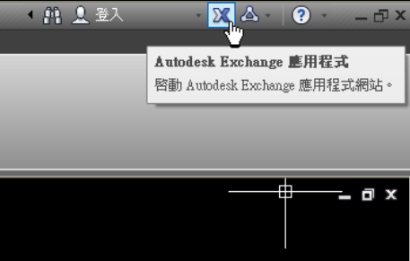
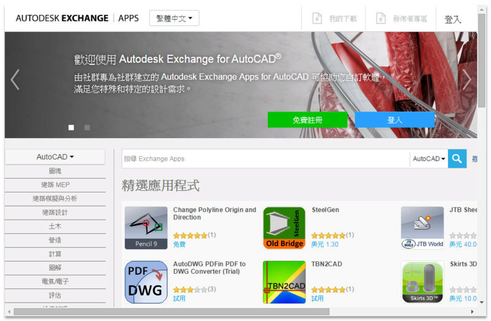
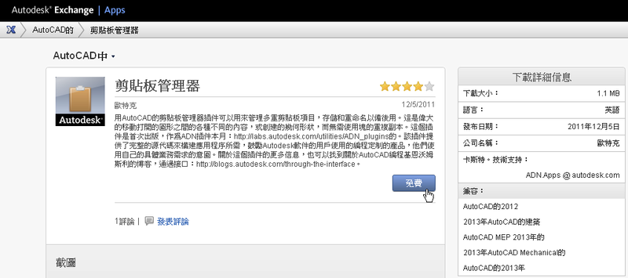
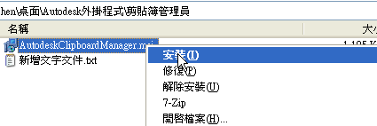
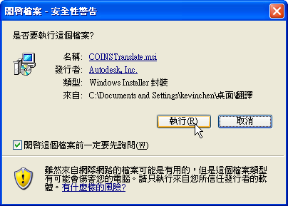
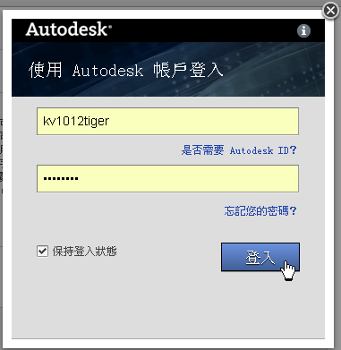
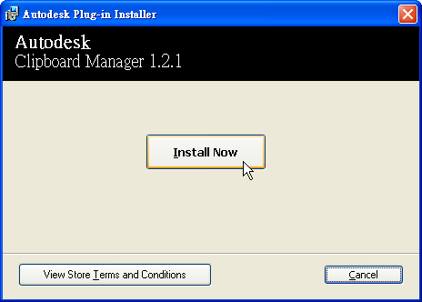
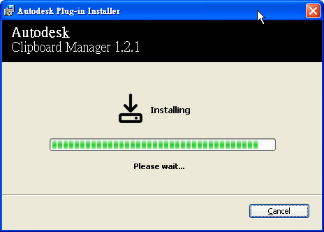
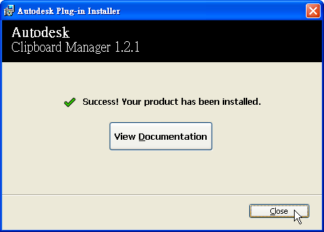
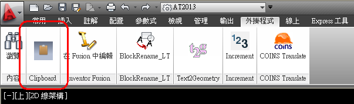

相信很多會員朋友常常會使用「智慧型手機」，下載免費的Apps程式使用，比較典型的Apps工具如：「Facebook」、「LINE」及「WhatApp」等等，以前都需靠電腦才能傳訊或聊天，現在透過「智慧型手機」之後，即可享受這科技帶來的便利，也已經成為生活中不可或缺的一部份。
工作中我一直找尋提升供作效率的方法，終於發現到 Autodesk Exchange Apps，他可以在AutoCAD中快速安裝「App外掛程式」供使用者使用，而這個網站其實Autodesk已經推出很久了，可能有會員朋友已經在使用了，日前一直找不到時間運用，現在終於能整理出一些心得與各位分享，相信可以讓繪圖步驟及工作任務更輕鬆完成，通常我都是下載免費的Apps外掛程式使用，建議大家可以撥點時間來挖寶，看看能否找到適合的Apps外掛程式，使用者需要申請Autodesk帳戶登入後才可下載喔～
■什麼是 Autodesk Exchange Apps？
Autodesk Exchange Apps 是一個線上資源，您可以在其中瀏覽和購買應用程式 (包括特定於產品的內容，例如模型、訓練材料和電子書)，已為多個 Autodesk 產品提供該資源。某些產品可以免費下載，某些產品需要付費才能下載。目前，透過 PayPal 處理購買流程。可以在線上追蹤購買和下載，或使用 Autodesk Exchange App Manager 追蹤購買和下載。
1.開啟AutoCAD 2012或2013版本，點擊螢幕畫面右上方「Autodesk Exchange 應用程式」

2.畫面開啟「Autodesk Exchange 應用程式網站」

Autodesk Exchange 應用程式網站
http://apps.exchange.autodesk.com/ACD/Home
3.選擇找到適合的「App外掛程式」，點擊「Free」免費

4.建議儲存到電腦中後，在清單中的某應用程式上按一下右鍵

5.執行安裝作業

6.必需登入Autodesk帳戶後才可安裝

註：目前僅支援2012及2013以上版本。
Autodesk帳戶登入：
https://accounts.autodesk.com/LogOn
建立Autodesk帳戶：
https://accounts.autodesk.com/register
7.點擊「Install Now」

註：安裝作業不需關閉AutoCAD。
8.「App外掛程式」安裝中

9.安裝完成點擊「Close」即可

10.畫面回到AutoCAD中，在「功能區」切換到「外掛程式」面板即可使用該應用程式

註：「應用程式」僅支援功能區介面，有的會支援工具列介面，通常使用者都可使用指令方式執行該「應用程式」。